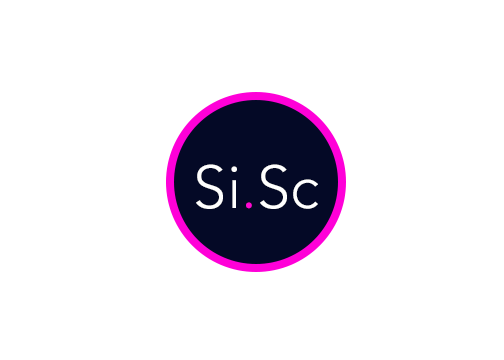

Bringing Scouting into the 21st Century

Si.Sc aims to change the way that FIRST teams scout and analyze their data. Si.Sc is bringing scouting into the 21st century
by providing an accurate, easy, and fast way to collect, store, and autonomously analyze data.